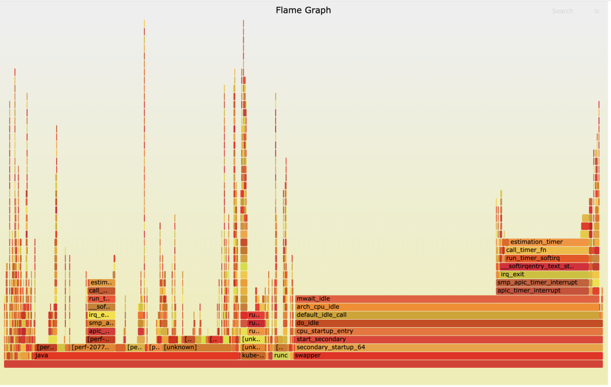

- 00 开篇词 一个态度两个步骤，成为容器实战高手.md.html
- 01 认识容器：容器的基本操作和实现原理.md.html
- 02 理解进程（1）：为什么我在容器中不能kill 1号进程？.md.html
- 03 理解进程（2）：为什么我的容器里有这么多僵尸进程？.md.html
- 04 理解进程（3）：为什么我在容器中的进程被强制杀死了？.md.html
- 05 容器CPU（1）：怎么限制容器的CPU使用？.md.html
- 06 容器CPU（2）：如何正确地拿到容器CPU的开销？.md.html
- 07 Load Average：加了CPU Cgroup限制，为什么我的容器还是很慢？.md.html
- 08 容器内存：我的容器为什么被杀了？.md.html
- 09 Page Cache：为什么我的容器内存使用量总是在临界点.md.html
- 10 Swap：容器可以使用Swap空间吗？.md.html
- 11 容器文件系统：我在容器中读写文件怎么变慢了？.md.html
- 12 容器文件Quota：容器为什么把宿主机的磁盘写满了？.md.html
- 13 容器磁盘限速：我的容器里磁盘读写为什么不稳定_.md.html
- 14 容器中的内存与IO：容器写文件的延时为什么波动很大？.md.html
- 15 容器网络：我修改了_proc_sys_net下的参数，为什么在容器中不起效？.md.html
- 16 容器网络配置（1）：容器网络不通了要怎么调试.md.html
- 17 容器网络配置（2）：容器网络延时要比宿主机上的高吗.md.html
- 18 容器网络配置（3）：容器中的网络乱序包怎么这么高？.md.html
- 19 容器安全（1）：我的容器真的需要privileged权限吗.md.html
- 20 容器安全（2）：在容器中，我不以root用户来运行程序可以吗？.md.html
- 加餐01 案例分析：怎么解决海量IPVS规则带来的网络延时抖动问题？.md.html
- 加餐02 理解perf：怎么用perf聚焦热点函数？.md.html
- 加餐03 理解ftrace（1）：怎么应用ftrace查看长延时内核函数？.md.html
- 加餐04 理解ftrace（2）：怎么理解ftrace背后的技术tracepoint和kprobe？.md.html
- 加餐05 eBPF：怎么更加深入地查看内核中的函数？.md.html
- 加餐06 BCC：入门eBPF的前端工具.md.html
- 结束语 跳出舒适区，突破思考的惰性.md.html
- 捐赠
加餐02 理解perf：怎么用perf聚焦热点函数？
你好，我是程远。今天我要和你聊一聊容器中如何使用perf。
[上一讲]中，我们分析了一个生产环境里的一个真实例子，由于节点中的大量的IPVS规则导致了容器在往外发送网络包的时候，时不时会有很高的延时。在调试分析这个网络延时问题的过程中，我们会使用多种Linux内核的调试工具，利用这些工具，我们就能很清晰地找到这个问题的根本原因。
在后面的课程里，我们会挨个来讲解这些工具，其中perf工具的使用相对来说要简单些，所以这一讲我们先来看perf这个工具。
问题回顾
在具体介绍perf之前，我们先来回顾一下，上一讲中，我们是在什么情况下开始使用perf工具的，使用了perf工具之后给我们带来了哪些信息。
在调试网路延时的时候，我们使用了ebpf的工具之后，发现了节点上一个CPU，也就是CPU32的Softirq CPU Usage（在运行top时，%Cpu那行中的si数值就是Softirq CPU Usage）时不时地会增高一下。
在发现CPU Usage异常增高的时候，我们肯定想知道是什么程序引起了CPU Usage的异常增高，这时候我们就可以用到perf了。
具体怎么操作呢？我们可以通过抓取数据、数据读取和异常聚焦三个步骤来实现。
第一步，抓取数据。当时我们运行了下面这条perf命令，这里的参数 -C 32 是指定只抓取CPU32的执行指令；-g 是指call-graph enable，也就是记录函数调用关系； sleep 10 主要是为了让perf抓取10秒钟的数据。
# perf record -C 32 -g -- sleep 10
执行完 perf record 之后，我们可以用 perf report 命令进行第二步，也就是读取数据。为了更加直观地看到CPU32上的函数调用情况，我给你生成了一个火焰图（火焰图的生产方法，我们在后面介绍）。
通过这个火焰图，我们发现了在Softirq里TIMER softirq （run_timer_softirq）的占比很高，并且timer主要处理的都是estimation_timer()这个函数，也就是看火焰图X轴占比比较大的函数。这就是第三步异常聚焦，也就是说我们通过perf在CPU Usage异常的CPU32上，找到了具体是哪一个内核函数使用占比较高。这样在后面的调试分析中，我们就可以聚焦到这个内核函数estimation_timer() 上了。

好了，通过回顾我们在网络延时例子中是如何使用perf的，我们知道了这一点，perf可以在CPU Usage增高的节点上找到具体的引起CPU增高的函数，然后我们就可以有针对性地聚焦到那个函数做分析。
既然perf工具这么有用，想要更好地使用这个工具，我们就要好好认识一下它，那我们就一起看看perf的基本概念和常用的使用方法。
如何理解Perf的概念和工作机制？
Perf这个工具最早是Linux内核著名开发者Ingo Molnar开发的，它的源代码在内核源码tools目录下，在每个Linux发行版里都有这个工具，比如CentOS里我们可以运行 yum install perf 来安装，在Ubuntu里我们可以运行 apt install linux-tools-common 来安装。
Event
第一次上手使用perf的时候，我们可以先运行一下 perf list 这个命令，然后就会看到perf列出了大量的event，比如下面这个例子就列出了常用的event。
# perf list
…
branch-instructions OR branches [Hardware event]
branch-misses [Hardware event]
bus-cycles [Hardware event]
cache-misses [Hardware event]
cache-references [Hardware event]
cpu-cycles OR cycles [Hardware event]
instructions [Hardware event]
ref-cycles [Hardware event]
alignment-faults [Software event]
bpf-output [Software event]
context-switches OR cs [Software event]
cpu-clock [Software event]
cpu-migrations OR migrations [Software event]
dummy [Software event]
emulation-faults [Software event]
major-faults [Software event]
minor-faults [Software event]
page-faults OR faults [Software event]
task-clock [Software event]
…
block:block_bio_bounce [Tracepoint event]
block:block_bio_complete [Tracepoint event]
block:block_bio_frontmerge [Tracepoint event]
block:block_bio_queue [Tracepoint event]
block:block_bio_remap [Tracepoint event]
从这里我们可以了解到event都有哪些类型， perf list 列出的每个event后面都有一个”[]“，里面写了这个event属于什么类型，比如”Hardware event”、”Software event”等。完整的event类型，我们在内核代码枚举结构perf_type_id里可以看到。
接下来我们就说三个主要的event，它们分别是Hardware event、Software event还有Tracepoints event。
Hardware event
Hardware event来自处理器中的一个PMU（Performance Monitoring Unit），这些event数目不多，都是底层处理器相关的行为，perf中会命名几个通用的事件，比如cpu-cycles，执行完成的instructions，Cache相关的cache-misses。
不同的处理器有自己不同的PMU事件，对于Intel x86处理器，PMU的使用和编程都可以在“Intel 64 and IA-32 Architectures Developer’s Manual: Vol. 3B”（Intel 架构的开发者手册）里查到。
我们运行一下 perf stat ，就可以看到在这段时间里这些Hardware event发生的数目。
# perf stat
^C
Performance counter stats for 'system wide':
58667.77 msec cpu-clock # 63.203 CPUs utilized
258666 context-switches # 0.004 M/sec
2554 cpu-migrations # 0.044 K/sec
30763 page-faults # 0.524 K/sec
21275365299 cycles # 0.363 GHz
24827718023 instructions # 1.17 insn per cycle
5402114113 branches # 92.080 M/sec
59862316 branch-misses # 1.11% of all branches
0.928237838 seconds time elapsed
Software event
Software event是定义在Linux内核代码中的几个特定的事件，比较典型的有进程上下文切换（内核态到用户态的转换）事件context-switches、发生缺页中断的事件page-faults等。
为了让你更容易理解，这里我举个例子。就拿page-faults这个perf事件来说，我们可以看到，在内核代码处理缺页中断的函数里，就是调用了perf_sw_event()来注册了这个page-faults。
/*
* Explicitly marked noinline such that the function tracer sees this as the
* page_fault entry point. __do_page_fault 是Linux内核处理缺页中断的主要函数
*/
static noinline void
__do_page_fault(struct pt_regs *regs, unsigned long hw_error_code,
unsigned long address)
{
prefetchw(¤t->mm->mmap_sem);
if (unlikely(kmmio_fault(regs, address)))
return;
/* Was the fault on kernel-controlled part of the address space? */
if (unlikely(fault_in_kernel_space(address)))
do_kern_addr_fault(regs, hw_error_code, address);
else
do_user_addr_fault(regs, hw_error_code, address);
/* 在do_user_addr_fault()里面调用了perf_sw_event() */
}
/* Handle faults in the user portion of the address space */
static inline
void do_user_addr_fault(struct pt_regs *regs,
unsigned long hw_error_code,
unsigned long address)
{
…
perf_sw_event(PERF_COUNT_SW_PAGE_FAULTS, 1, regs, address);
…
}
Tracepoints event
你可以在 perf list 中看到大量的Tracepoints event，这是因为内核中很多关键函数里都有Tracepoints。它的实现方式和Software event类似，都是在内核函数中注册了event。
不过，这些tracepoints不仅是用在perf中，它已经是Linux内核tracing的标准接口了，ftrace，ebpf等工具都会用到它，后面我们还会再详细介绍tracepoint。
好了，讲到这里，你要重点掌握的内容是，event是perf工作的基础，主要有两种：有使用硬件的PMU里的event，也有在内核代码中注册的event。
那么在这些event都准备好了之后，perf又是怎么去使用这些event呢？前面我也提到过，有计数和采样两种方式，下面我们分别来看看。
计数（count）
计数的这种工作方式比较好理解，就是统计某个event在一段时间里发生了多少次。
那具体我们怎么进行计数的呢？perf stat 这个命令就是来查看event的数目的，前面我们已经运行过 perf stat 来查看所有的Hardware events。
这里我们可以加上”-e”参数，指定某一个event来看它的计数，比如page-faults，这里我们看到在当前CPU上，这个event在1秒钟内发生了49次：
# perf stat -e page-faults -- sleep 1
Performance counter stats for 'sleep 1':
49 page-faults
1.001583032 seconds time elapsed
0.001556000 seconds user
0.000000000 seconds sys
采样（sample）
说完了计数，我们再来看看采样。在开头回顾网路延时问题的时候，我提到通过 perf record -C 32 -g -- sleep 10 这个命令，来找到CPU32上CPU开销最大的Softirq相关函数。这里使用的 perf record 命令就是通过采样来得到热点函数的，我们来分析一下它是怎么做的。
perf record 在不加 -e 指定event的时候，它缺省的event就是Hardware event cycles。我们先用 perf stat来查看1秒钟cycles事件的数量，在下面的例子里这个数量是1878165次。
我们可以想一下，如果每次cycles event发生的时候，我们都记录当时的IP（就是处理器当时要执行的指令地址）、IP所属的进程等信息的话，这样系统的开销就太大了。所以perf就使用了对event采样的方式来记录IP、进程等信息。
# perf stat -e cycles -- sleep 1
Performance counter stats for 'sleep 1':
1878165 cycles
Perf对event的采样有两种模式：
第一种是按照event的数目（period），比如每发生10000次cycles event就记录一次IP、进程等信息， perf record 中的 -c 参数可以指定每发生多少次，就做一次记录。
比如在下面的例子里，我们指定了每10000 cycles event做一次采样之后，在1秒里总共就做了191次采样，比我们之前看到1秒钟1878165次cycles的次数要少多了。
# perf record -e cycles -c 10000 -- sleep 1
[ perf record: Woken up 1 times to write data ]
[ perf record: Captured and wrote 0.024 MB perf.data (191 samples) ]
第二种是定义一个频率（frequency）， perf record 中的 -F 参数就是指定频率的，比如 perf record -e cycles -F 99 -- sleep 1 ，就是指采样每秒钟做99次。
在 perf record 运行结束后，会在磁盘的当前目录留下perf.data这个文件，里面记录了所有采样得到的信息。然后我们再运行 perf report 命令，查看函数或者指令在这些采样里的分布比例，后面我们会用一个例子说明。
好，说到这里，我们已经把perf的基本概念和使用机制都讲完了。接下来，我们看看在容器中怎么使用perf？
容器中怎样使用perf？
如果你的container image是基于Ubuntu或者CentOS等Linux发行版的，你可以尝试用它们的package repo安装perf的包。不过，这么做可能会有个问题，我们在前面介绍perf的时候提过，perf是和Linux kernel一起发布的，也就是说perf版本最好是和Linux kernel使用相同的版本。
如果容器中perf包是独立安装的，那么容器中安装的perf版本可能会和宿主机上的内核版本不一致，这样有可能导致perf无法正常工作。
所以，我们在容器中需要跑perf的时候，最好从相应的Linux kernel版本的源代码里去编译，并且采用静态库（-static）的链接方式。然后，我们把编译出来的perf直接copy到容器中就可以使用了。
如何在Linux kernel源代码里编译静态链接的perf，你可以参考后面的代码：
# cd $(KERNEL_SRC_ROOT)/tools/perf
# vi Makefile.perf
#### ADD “LDFLAGS=-static” in Makefile.perf
# make clean; make
# file perf
perf: ELF 64-bit LSB executable, x86-64, version 1 (GNU/Linux), statically linked, for GNU/Linux 3.2.0, BuildID[sha1]=9a42089e52026193fabf693da3c0adb643c2313e, with debug_info, not stripped, too many notes (256)
# ls -lh perf
-rwxr-xr-x 1 root root 19M Aug 14 07:08 perf
我这里给了一个带静态链接perf（kernel 5.4）的container image例子，你可以运行 make image 来生成这个image。
在容器中运行perf，还要注意一个权限的问题，有两点注意事项需要你留意。
第一点，Perf 通过系统调用perf_event_open()来完成对perf event的计数或者采样。不过Docker使用seccomp（seccomp是一种技术，它通过控制系统调用的方式来保障Linux安全）会默认禁止perf_event_open()。
所以想要让Docker启动的容器可以运行perf，我们要怎么处理呢？
其实这个也不难，在用Docker启动容器的时候，我们需要在seccomp的profile里，允许perf_event_open()这个系统调用在容器中使用。在我们的例子中，启动container的命令里，已经加了这个参数允许了，参数是”–security-opt seccomp=unconfined”。
第二点，需要允许容器在没有SYS_ADMIN这个capability（Linux capability我们在[第19讲]说过）的情况下，也可以让perf访问这些event。那么现在我们需要做的就是，在宿主机上设置出 echo -1 > /proc/sys/kernel/perf_event_paranoid，这样普通的容器里也能执行perf了。
完成了权限设置之后，在容器中运行perf，就和在VM/BM上运行没有什么区别了。
最后，我们再来说一下我们在定位CPU Uage异常时最常用的方法，常规的步骤一般是这样的：
首先，调用 perf record 采样几秒钟，一般需要加 -g 参数，也就是call-graph，还需要抓取函数的调用关系。在多核的机器上，还要记得加上 -a 参数，保证获取所有CPU Core上的函数运行情况。至于采样数据的多少，在讲解perf概念的时候说过，我们可以用 -c 或者 -F 参数来控制。
接着，我们需要运行 perf report 读取数据。不过很多时候，为了更加直观地看到各个函数的占比，我们会用 perf script 命令把perf record生成的perf.data转化成分析脚本，然后用FlameGraph工具来读取这个脚本，生成火焰图。
下面这组命令，就是刚才说过的使用perf的常规步骤：
# perf record -a -g -- sleep 60
# perf script > out.perf
# git clone --depth 1 https://github.com/brendangregg/FlameGraph.git
# FlameGraph/stackcollapse-perf.pl out.perf > out.folded
# FlameGraph/flamegraph.pl out.folded > out.sv
重点总结
我们这一讲学习了如何使用perf，这里我来给你总结一下重点。
首先，我们在线上网络延时异常的那个实际例子中使用了perf。我们发现可以用perf工具，通过抓取数据、数据读取和异常聚焦这三个步骤的操作，在CPU Usage增高的节点上找到具体引起CPU增高的函数。
之后我带你更深入地学习了perf是什么，它的工作方式是怎样的？这里我把perf的重点再给你强调一遍：
Perf的实现基础是event，有两大类，一类是基于硬件PMU的，一类是内核中的软件注册。而Perf 在使用时的工作方式也是两大类，计数和采样。
先看一下计数，它执行的命令是 perf stat，用来查看每种event发生的次数；
采样执行的命令是perf record，它可以使用period方式，就是每N个event发生后记录一次event发生时的IP/进程信息，或者用frequency方式，每秒钟以固定次数来记录信息。记录的信息会存在当前目录的perf.data文件中。
如果我们要在容器中使用perf，要注意这两点：
1.容器中的perf版本要和宿主机内核版本匹配，可以直接从源代码编译出静态链接的perf。 2.我们需要解决两个权限的问题，一个是seccomp对系统调用的限制，还有一个是内核对容器中没有SYC_ADMIN capability的限制。
在我们日常分析系统性能异常的时候，使用perf最常用的方式是perf record获取采样数据，然后用FlameGraph工具来生成火焰图。
思考题
你可以在自己的一台Linux机器上运行一些带负载的程序，然后使用perf并且生成火焰图，看看开销最大的函数是哪一个。
欢迎在留言区分享你的疑惑和见解。你也可以把今天的内容分享给你的朋友，和他一起学习和进步。
© 2019 - 2023 Liangliang Lee. Powered by gin and hexo-theme-book.